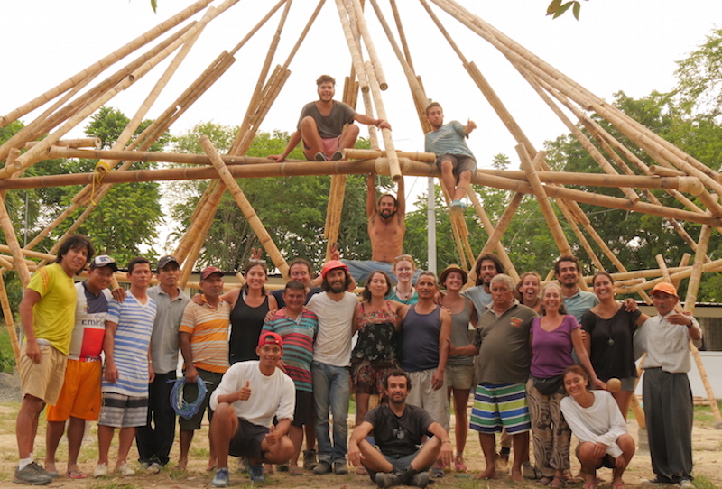
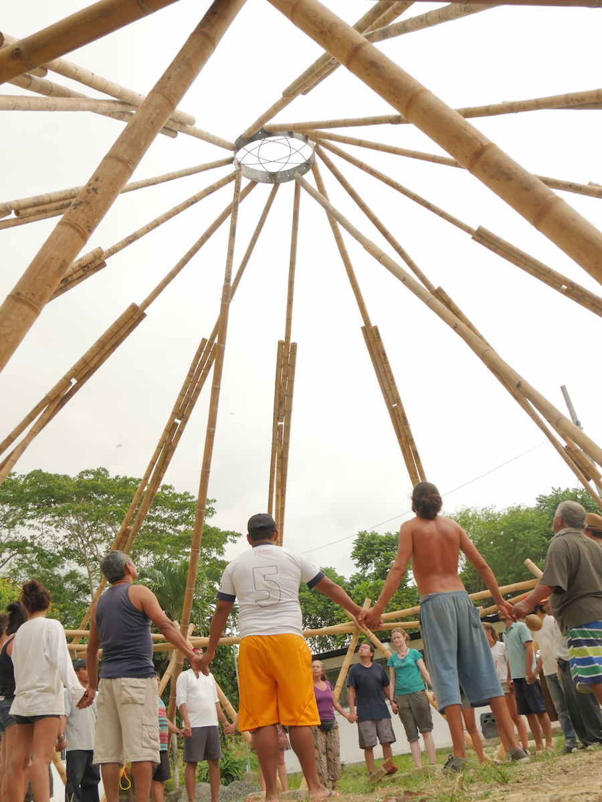
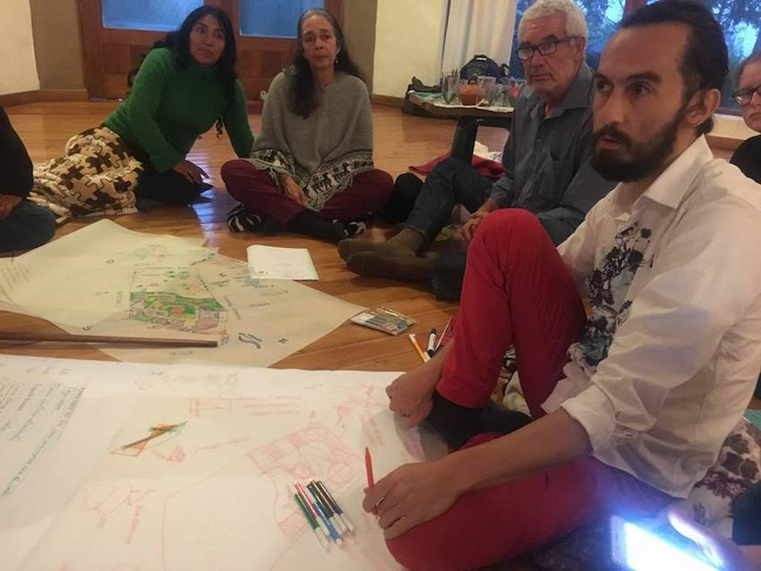
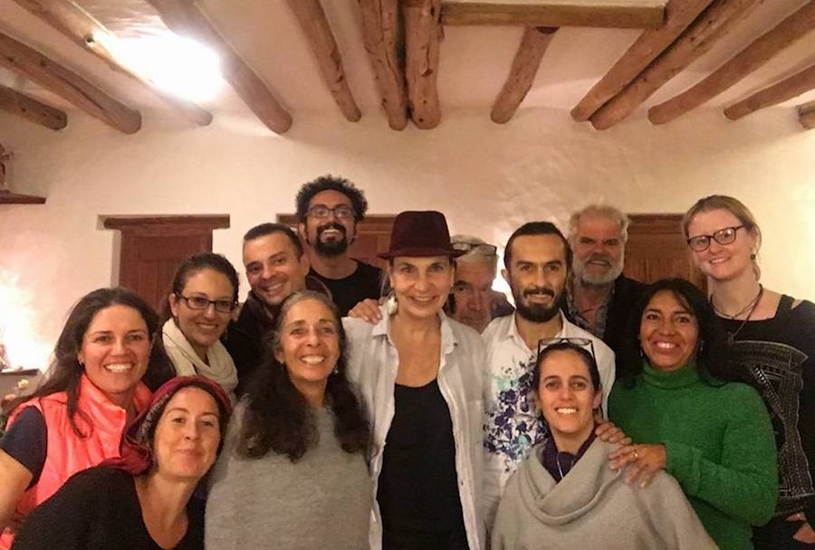
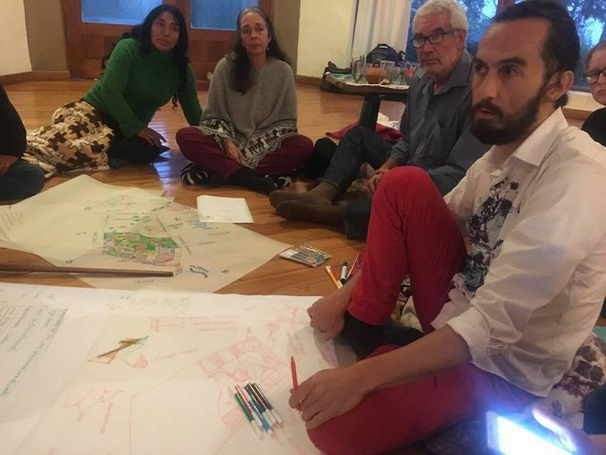
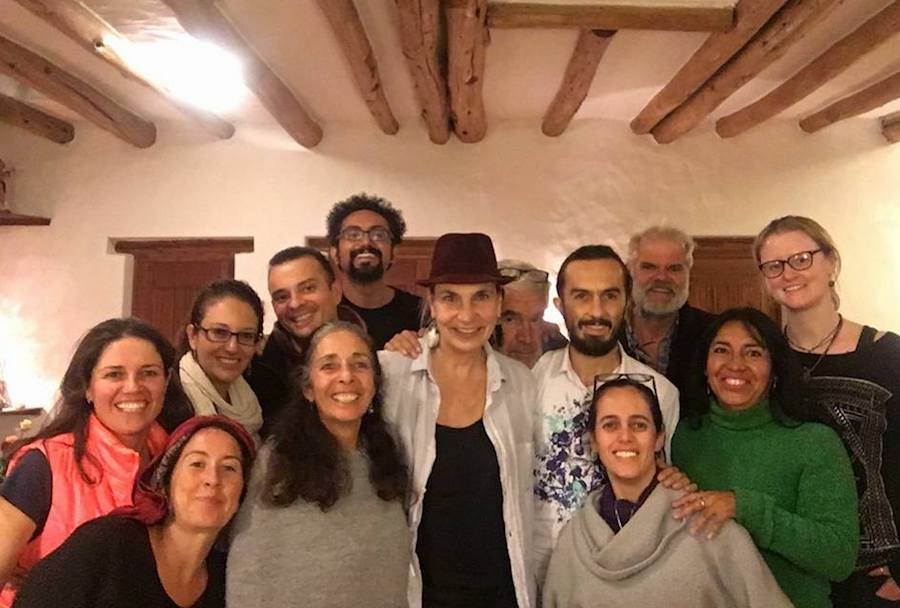

EVENTOS/TALLERES
NUESTROS TALLERES
CONTENIDO DE LOS CURSOS QUE SE DARAN DE JUNIO A SEPTIEMBRE, si te interesa saber sobre las fechas específicas y costos, escribe a kawsaypasisa@gmail.com
SUEÑO COLECTIVO
Visión y Propósito
Introducción a la Permacultura
Introducción al Turismo Comunitario
Círculo amorfino y música
REGENERACIÓN DE SUELO
Composta y Bocashi
Transición Interior, Gestión Emocional
Qué turismo queremos?
Sociocracia, tipos de gobernanza
Show de Talentos
RIEGO
Curvas de nivel
Baños Secos y Biodigestores
Reconocimiento del Territorio y Atractivos, Caminatas senderos
Sociocracias, Círculos y Dobles Enlaces
Reconexión con la Naturaleza y Elemento Agua
Danzas de Paz
SIEMBRA
Diseño Permacultural
Huertos orgánicos
Implementación Vivero
Turismo por grupo: Guías, Hospedajes, Administración
Sociocracia, Toma de Decisiones
Música y Amorfino
ABONO
Intensivo Bioles y Supermagros
Turismo por Grupos: Guías, Hospedajes, Administración
Sociocracia, Selección de Roles
CUIDADO
Implementación Centro y Señalética
Estrategias de Mercadeo en Turismo
Sociocracia, Selección de Roles
COSECHA
FERIA DE LANZAMIENTO PÁGINA WEB CENTRO Y RAMBUCHE TURISMO
PRODUCTOS LOCALES Y ORGÁNICOS
TURISMO, ARTESANÍA, CULTURA
Por definir
 


